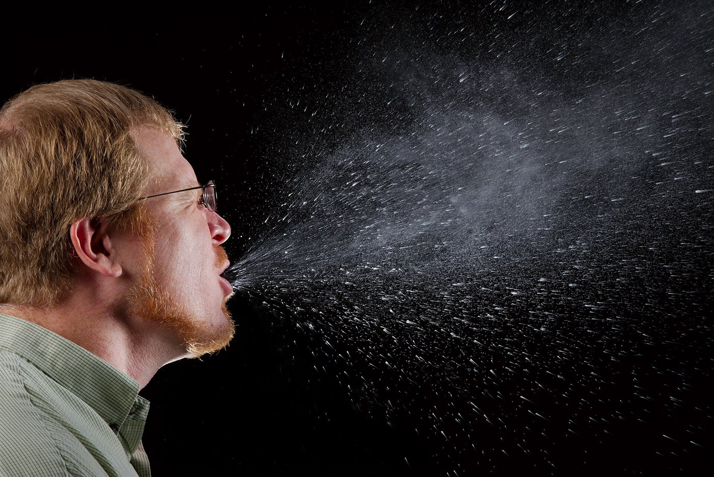

Física de la transmisión aérea de enfermedades
Durante años, un estornudo se pensó como una ducha de gotitas: cada una sale disparada, vuela una trayectoria y cae. La física es más interesante, y un poco más inquietante. Las gotas no viajan solas: van dentro de una nube de aire caliente y húmedo que las lleva de paseo.
Una gota quieta en el aire cae a una velocidad terminal. Para gotas muy chicas, el arrastre de Stokes equilibra el peso y da:
Con la viscosidad del aire, una gota de 100 micrómetros de diámetro cae a unos 30 cm/s, y tarda unos 5 segundos en bajar desde 1,5 metros. Una de 10 micrómetros cae a 3 mm/s y tarda unos 8 minutos. Una de 1 micrómetro tarda más de 12 horas en aire quieto (cálculos propios). La velocidad va con el cuadrado del radio: diez veces menos tamaño es cien veces más tiempo en el aire. En la realidad, el aire de un ambiente nunca está quieto, y esos tiempos son solo una referencia. Además, la gota de 100 micrómetros queda fuera del rango estricto de Stokes.
En 2014, L. Bourouiba, E. Dehandschoewercker y J. Bush, del Instituto de Tecnología de Massachusetts, filmaron toses y estornudos con cámaras de alta velocidad [1][2]. Concluyeron que no se puede modelarlos como gotas aisladas en movimiento balístico [2]. Una tos o un estornudo es una nube turbulenta multifásica y flotante [1][2]: una mezcla de gas y gotas que se mezcla con el aire de alrededor antes de que su carga caiga o se evapore [2].

Bourouiba lo explica así: la nube incorpora aire del ambiente, crece y se mezcla; al crecer, se frena y puede sostener menos gotas [2]. Según el estudio, las gotas de 100 micrómetros llegan cinco veces más lejos de lo estimado antes, y las de 10 micrómetros, 200 veces más [2]. Las menores de 50 micrómetros pueden mantenerse en el aire lo suficiente para llegar a las rejillas de ventilación del techo [2].
El colectivo de las gotas: una gota sola es un peatón que camina unos metros y se cansa. Dentro de la nube, va en colectivo. Las gotas chicas viajan con la nube mientras esta se mueve, y bajan recién cuando se frena.
La pregunta sanitaria no se responde solo con la física. Una gota que llega lejos no asegura contagio: depende del microorganismo, de la dosis y del ambiente, y eso ya es biología y epidemiología (un comentario propio). La investigadora Lidia Morawska, consultada por el MIT, calificó al trabajo de potencialmente muy importante, aunque dijo que quisiera ver estudios de seguimiento [2]. Lo que sí deja claro es que pensar en gotas aisladas era incompleto, y que la ventilación importa.
Otra conexión: la nube sube porque es más caliente y liviana que el aire: es la misma flotación de un tiraje de chimenea, y su mezcla es la de cualquier flujo turbulento. El detalle está en la palabra multifásica: un gas y un líquido que se influyen mutuamente (un comentario propio).
Un estornudo es una nube turbulenta que transporta gotas. Las gotas grandes caen rápido, según la ley de Stokes; las chicas viajan mucho más lejos dentro de la nube, y después pueden quedar suspendidas. Eso explica por qué cubrirse con el codo sirve y por qué ventilar importa, y también por qué la física de fluidos tuvo algo que decir sobre las enfermedades respiratorias.
Pregunta para la comunidad: Si la velocidad de caída es proporcional a r², y una gota se evapora y su radio baja a la mitad, ¿cuánto más tarda en caer? ¿Por qué el aire seco de un ambiente con calefacción podría mantener más tiempo las gotas en el aire?